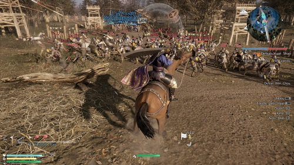

RESEÑA - DYNASTY WARRIORS 9
La franquicia de Dynasty Warriors ya lleva bastante tiempo ofreciéndonos, no sólo una serie longeva, sino también todo un estilo de juego que se ha pasado a otras sagas, franquicia con mucho más peso, pero que han encontrado en este particular estilo una fórmula digna de replicar. Hyrule Warriors, One Piece: Pirate Warriors, Fire Emblem Warriors y así otros más.
Lo anterior, más los 20 años que lleva existiendo la franquicia, provocaría que ahora, la novena y última entrega canónica de la serie Warriors se consagre como un gran juego, uno que por cierto, trae nuevas cosas a la serie y renueva muchos de sus apartados, y aunque esto último sea totalmente cierto, hablar que este última entrega es el juego que llegará a los corazones de más jugadores se presume como algo exagerado.
La historia del juego nos habla de los Turbantes amarillos y de su necesidad de crear una rebelión. Dividida la historia entre capítulos, veremos diversos conflictos, traiciones y ejércitos enfrentados con decenas de personajes históricos. A lo largo de la historia veremos un despliegue de folklore chino que ha sido de nuestro agrado, aunque tampoco podríamos decir que la historia nos ha quitado el sueño.
Dynasty Warriors 9 es un juego necesario para que la franquicia madure ya que de una forma muy adecuada, Omega Force, su estudio responsable, intenta agregar elementos a la jugabilidad que toma prestados de otros géneros para darle más variedad al mismo, pero por lo visto, no se consiguió hacer mucho ya que, si algo sabe hacer este estudio son los Musou, ya saben, estos juegos con batallas multitudinarias… pero mundos abiertos, no tanto. La China que vemos representada en el juego es bastante grande, y se puede notar como se le ha puesto empeño para representar los pueblos y diferentes villa, además de, claro, esos impactantes palacios donde se ve la elite de este enorme ejército, pero eso no quita que el juego esté rodeado por prados enormes de nada. Un mundo que no se siente vivo y que solo sirve para que usemos transiciones a caballo, que si bien no se ven nada mal, realmente no haremos mucho más que recorrerlas porque así nos lo pide el juego.
El sistema jugable, aunque se mantiene en su mayoría, se siente más rápido y con mayor posibilidades para agregarle más espectacularidad a los ataques, eso sí, al ser un mundo abierto hemos notado que las peleas tiene muchos menos enemigos moviéndose de lo que recordamos en entregas pasadas, curioso viniendo de un mundo que intenta decirnos que todo es más grande.

Visualmente el juego no se ve mal, aunque faltaron más detalles para el mundo, y si lo comparamos con otros títulos de mundo abierto, Dynasty Warriors 9 sale perdiendo. No piensen mal, el juego nos es un calamidad y no dudamos que este juego sirve como transición para poder traernos futuros juegos de la franquicia más ambiciosos, pero por lo pronto, se nota que le ha faltado más trabajo a Dynasty Warriors 9, sobre todo a la hora de intentar hacer que más gente se acerque a la franquicia, porque, por lo que hemos jugado, las faltas del juego y su poca profundización de ese mundo abierto no conseguirán muchos adeptos nuevos a la franquicia.